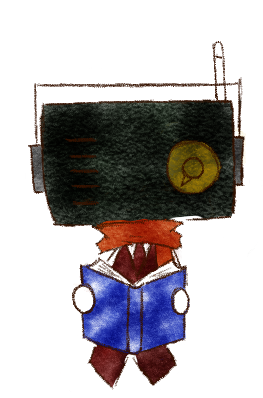

FREE SCRIPT
ナイトパレード


A VOICE FOR YOUR NIGHT
23:00
23時の声
A LITTLE VOICE
眠る前の、ほんのひとときに。
一日の終わりに、ふと耳に届く声。 毎日の暮らしの片隅に、そっと置いておけるような 小さな物語を届けます。
気が向いた夜に、いつでも立ち寄ってください。
声を聴ける場所へ →
ABOUT THE NARRATOR語り手・秋茸梓樹
作品の中にある言葉や空気を、声にのせて届ける語り手。 フリー台本の朗読や青空文庫の作品、 「23時の声」などを中心に活動しています。
まだ知られていない素敵な作品と、 それを必要とする誰かが出会うきっかけになれたら。 何気ない時間に、ふと思い出して聴きたくなる声を目指して、 ひとつひとつの作品を届けています。
活動場所を見る →
FIND ME ELSEWHERE
活動場所
それぞれの場所で、声や日々の活動を発信しています。